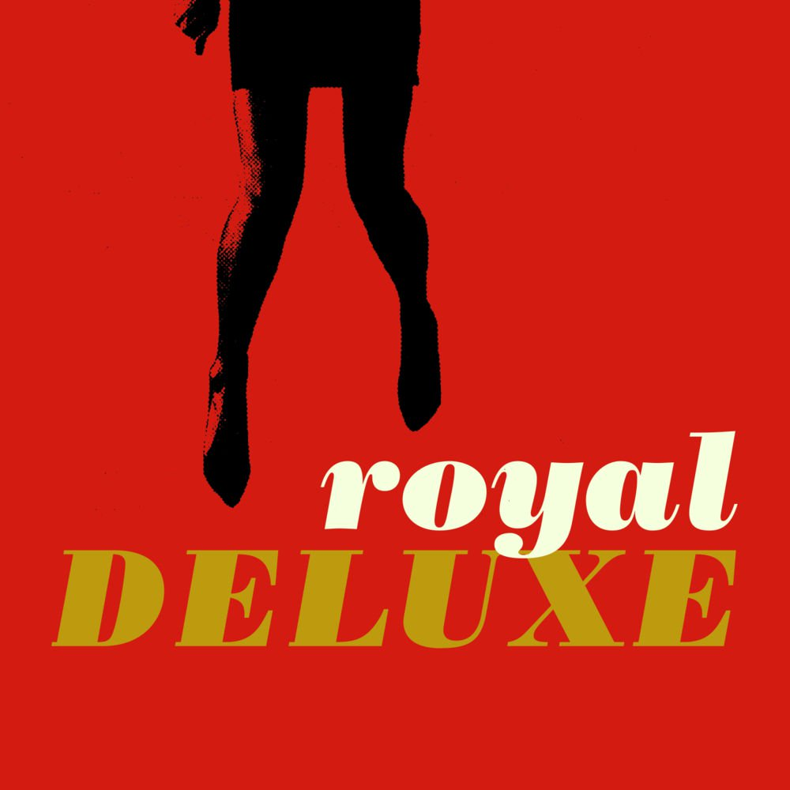

Royal Deluxe is a collaboration between national touring artist Tyrone Wells and Sam Getz and Jimmy Weaver of the band Welshly Arms.
The self-titled debut EP from Royal Deluxe brings you seven songs that are packed full of retro soul, gritty vocals, and powerful throwback hooks.
Royal Deluxe is defined by it's crunchy guitars, deep pocket drum grooves, funky horns, and raspy James Brown-esque vocals.
My favorite song from them is I'm Gonna Do My Thing
